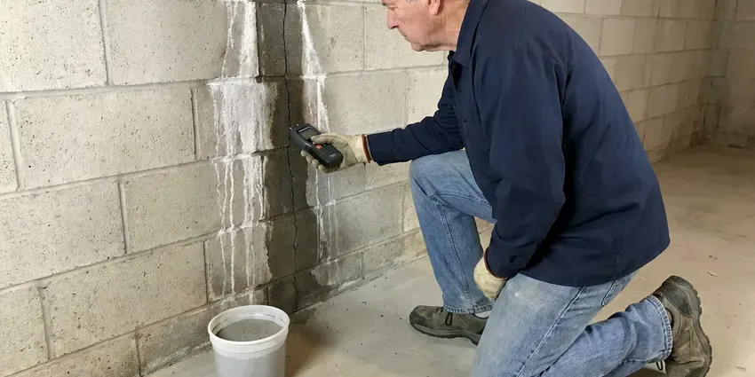

Slab Leak Detection in Fairmont, WV
If you suspect a slab leak in your Fairmont, WV home, GJK Plumbing provides prompt, accurate detection to prevent further damage and costly repairs.
- Reroute and Repair Options
- Fast Leak Detection
- Foundation Safety
- Advanced Diagnostics
Get Accurate Slab Leak Detection From Local Pros in Fairmont, WV.
Our skilled technicians use non-invasive methods to find and fix slab leaks quickly and efficiently.
Reliable Slab Leak Detection Services in Fairmont, WV
GJK Plumbing understands the real challenges slab leaks pose to homes in Fairmont, WV. Our certified technicians are equipped with specialized tools to accurately locate leaks beneath your home's concrete slab, preventing extensive property damage.
Our expertise includes:
- Thermal imaging to identify small temperature changes
- Electronic leak detection for accurate pinpointing
- Thermal imaging cameras to detect temperature changes from leaks.

Additional Plumbing Maintenance Services in Fairmont, WV
Our maintenance and specialty plumbing services in Fairmont, WV protect your home year-round and extend the life of every system.


Customers
Why Choose GJK Plumbing for Slab Leak Detection in Fairmont, WV?
Our team uses non-invasive techniques to find leaks, minimizing disruption and saving you time and money in the long run.
- Water Bills, Even a small slab leak can waste hundreds of gallons of water a day, causing your water bills to jump dramatically.
- Local Expertise, Understanding the local climate and common foundation types in West Virginia helps us diagnose issues faster and more effectively.
- Foundation Focus, Our methods are built to protect your home's structural integrity, a critical concern for West Virginia homeowners.
Citywide Coverage
GJK Plumbing proudly serves every neighborhood in Fairmont, so no matter where you are, expert slab leak detection is just a call away. We understand the plumbing layouts common in different parts of Fairmont.
Experienced Team
Our team of licensed plumbers has extensive experience with slab leak detection and is trained in how climate and soil conditions affect slab plumbing. We know how shifting soils can strain underground pipes, leading to leaks.
Safety-First Approach
All our detection methods are non-invasive and performed with the utmost care for your property. We maintain a safe work environment and compliance with all relevant building and plumbing standards.
Trusted Certified Fairmont Plumbing Services Professionals
At GJK Plumbing, we take pride in providing certified plumbing services throughout Fairmont, WV. Backed by recognized industry credentials, our experienced plumbers combine technical skill with genuine customer care. Whether it is repair, installation, or maintenance, we follow strict safety and quality standards to deliver long-lasting results you can trust.
Call Us Now PHCC Plumbing Contractor Recognition
PHCC Plumbing Contractor Recognition Better Business Bureau (BBB) Accreditation
Better Business Bureau (BBB) Accreditation Angi Certified Pro
Angi Certified Pro ISO 9001 Quality Management Certification
ISO 9001 Quality Management CertificationPrecise Slab Leak Detection Services in Fairmont, WV
Emergency Slab Leak Services in Fairmont, WV
A sudden, severe slab leak can cause fast damage to your property. GJK Plumbing offers emergency slab leak detection services across Fairmont, WV when you need immediate assistance. Our rapid response team is equipped to handle urgent situations, reducing damage and providing timely solutions to protect your home or business from extensive water harm.

Non-Invasive Leak Detection in Fairmont, WV
Our primary goal is to locate your slab leak with the least amount of disruption possible. We prioritize non-invasive techniques like acoustic and thermal imaging before considering any intrusive methods. This approach saves your home in Fairmont, WV from unnecessary damage, preserves your landscaping and lowers the overall cost and time of the repair process.
Electronic Leak Detection in Fairmont
For hard-to-find leaks, our electronic leak detection equipment sends a signal through your pipes and measures changes that indicate a breach. This technology allows us to locate leaks in many pipe materials, including copper, PEX and PVC, commonly found in Fairmont homes. It helps prevent exploratory digging, saving you time and money.
Thermal Imaging for Slab Leaks in Fairmont, WV
Thermal imaging cameras allow us to visualize temperature differences on surfaces, which can indicate a hidden water leak. As water escapes a hot water line, it creates a distinct thermal signature on the concrete slab. This technique is particularly useful for hot water line leaks and helps us narrow down the search area significantly without any physical disruption to your property in Fairmont.
Emergency Slab Leak Detection in Fairmont
A sudden drop in water pressure, visible dampness or the sound of running water can signal an emergency slab leak. GJK Plumbing offers emergency detection services in Fairmont to address urgent situations quickly. We focus on rapid response to limit water damage and prevent further structural compromise to your property.
Cold Water Slab Leak Detection in Fairmont, WV
Cold water slab leaks do not create warm spots, so they are harder to see. They often show up as a running water meter, damp carpet, a musty smell or water seeping at baseboards. We isolate the cold side and use acoustic equipment to listen for the leak through the slab. Line tracers map the pipe route so we know exactly where to listen.
Slab Leak Detection and Repair Cost Comparison in Fairmont, WV
Slab leak detection typically costs $150 to $450. Direct access repairs usually run $1,000 to $3,000, including concrete patching but not flooring replacement. Reroutes generally cost $800 to $3,500 depending on distance and access. Full repipes cost more, often $4,000 to $15,000, but end the problem permanently.

Video Pipe Inspection for Sewer Leaks in Fairmont, WV
Sewer line issues under a slab can also mimic slab leak symptoms. We use high-resolution video cameras to inspect the interior of your drain lines, identifying cracks, blockages or separations. This is vital if the issue isn't a pressurized water line, helping us determine if a sewer line repair is needed instead for your Fairmont home.
Slab Leak Detection Near Me in Fairmont, WV
We know the slab types and plumbing materials used in homes built across different decades around Fairmont. That background helps us locate leaks more quickly and recommend the right repair. Local service also means easy follow-up if anything comes up later.
When you suspect a slab leak, a quick local response limits the damage to your floors and foundation. Our technicians are based near Fairmont and can usually schedule testing within a day. We bring all detection equipment on the initial visit.
GJK Plumbing at a Glance
- Fully licensed plumbing team covering Fairmont, WV
- 24/7 emergency service with same-day scheduling
- Clear written estimates, no hidden fees
- 4.8-star rated by 832+ West Virginia customers
Fairmont Map
Fairmont Information
- Population
- 18,155
- Area codes
- Local
- Service area
- Fairmont and communities within 40 miles
- Nearby
- Bridgeport, Morgantown, Brookhaven, Clarksburg
Many homes in Fairmont, WV are built on concrete slabs with water lines running underneath, which makes under-slab pipe leaks one of the most common and costly plumbing problems in the area. West Virginia has a lot of older housing, and many homes built before 1960 still have galvanized supply lines and cast iron drains.
Expert Services
Trust our professionals for reliable GJK Plumbing solutions in Fairmont, WV.
Our Specialized Plumbing Services in Fairmont, WV
At GJK Plumbing, we provide a complete range of plumbing services across Fairmont, WV. From leak detection to full system installations, our team ensures fast, precise, and affordable service for both residential and commercial properties. Explore our core services below:


How Our Slab Leak Detection Process Works in Fairmont, WV
Our slab leak detection process is thorough, efficient and built to minimize disruption to your Fairmont, WV home.
Request a Quote
Contact GJK Plumbing at (681) 223-3607 to schedule your slab leak detection service. Our friendly staff will gather initial information about your concerns and set up a convenient appointment time.
On-Site Inspection
Our certified technician will arrive at your home to perform a thorough visual inspection and initial assessment of your plumbing system, looking for signs of a leak.
Advanced Detection
Using professional tools like acoustic listening devices, thermal cameras or electronic leak detectors, we'll pinpoint the exact location of the slab leak with high accuracy.
Frequently Asked Questions About Slab Leak Detection in Fairmont
Slab leak detection in Fairmont usually costs $150 to $450. Repairs range from about $800 for a simple reroute to $3,000 or more for direct access under finished floors. We provide a written estimate after locating the leak.
Direct repair works well for a single leak on otherwise healthy pipe in an accessible spot. Rerouting is often better under tile or hardwood and avoids future leaks on that line. We help you weigh both.
Reroutes and repipes often require a plumbing permit, while small direct repairs may not. Requirements vary by city and county. We handle permits and inspections when needed.
Most slab leak detection services can be completed within 1 to 3 hours, depending on the severity and location of the leak. Our goal is always to be as efficient and non-invasive as possible, providing a fast diagnosis so repair work can begin soon.
Many policies cover the cost to access the leak and repair resulting water damage, though the pipe itself may not be covered. Coverage varies by insurer. We provide photos and a written report for your claim.
Yes, a persistent slab leak can severely damage your home's foundation. Continuous saturation of the soil can lead to soil expansion and contraction, causing stress on the concrete slab, leading to cracks, shifting and potentially costly structural repairs. It's a critical concern for homeowners in Fairmont, WV.
Some homeowner's insurance policies may cover the cost of accessing and repairing the slab leak, especially if the leak was sudden and accidental. However, coverage often varies, and damage caused by long-term neglect might not be covered. We recommend checking your specific policy details or contacting your insurance provider for details.
Yes. Our slab leak repairs and reroutes carry a written workmanship warranty, and PEX systems from brands like Uponor include long manufacturer warranties. We explain the coverage before you approve the work. That gives you peace of mind on the repair.
What People Are Saying About Our Plumbing Experts?

Laura S.
I scheduled a water heater replacement, and the team made the process smooth and affordable. The new unit works perfectly, and they cleaned up after completing the job.
Water Heater Replacement · Morgantown, WV
Emily R.
I called GJK Plumbing for plumbing repair, and the technician was fast, polite, and thorough. They explained the problem clearly and fixed it the same day. I will definitely hire them again. Highly recommended!
Plumbing Repair · Bridgeport, WVSofia M.
Two new toilets installed in one visit, no mess left behind, and the tech even adjusted a faucet he noticed was dripping. Fair pricing and really friendly.
Toilet Installation · Bridgeport, WV
Robert G.
The trenchless sewer replacement saved our front yard. They walked us through the camera inspection footage first so we knew exactly what we were paying for.
Sewer Line Replacement · Clarksburg, WV
Mark T.
When our office needed drain cleaning, GJK Plumbing provided quick, reliable service. The plumber arrived on time and made sure every drain flowed perfectly before leaving. Very satisfied.
Drain Cleaning · Fairmont, WV
Patricia H.
We had a slab leak that two other companies could not find. GJK Plumbing located it in under an hour, explained our options, and the price matched the quote to the dollar.
Slab Leak Repair · Morgantown, WV